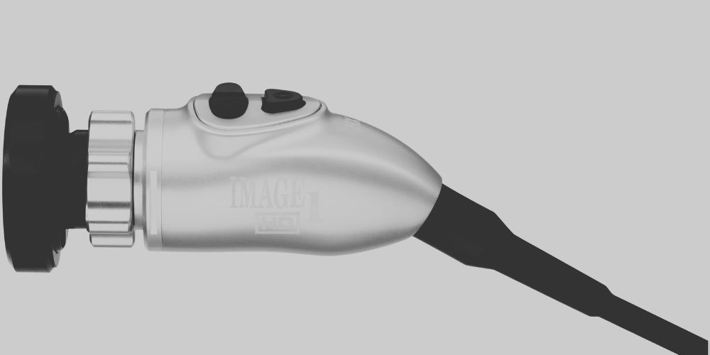
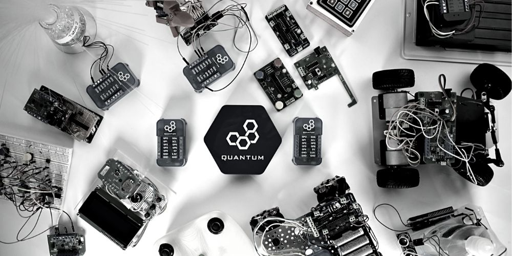
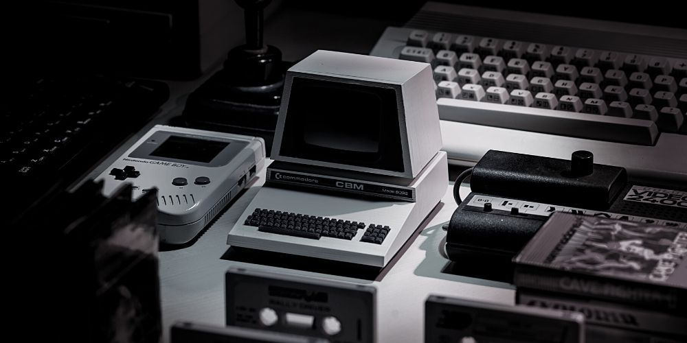
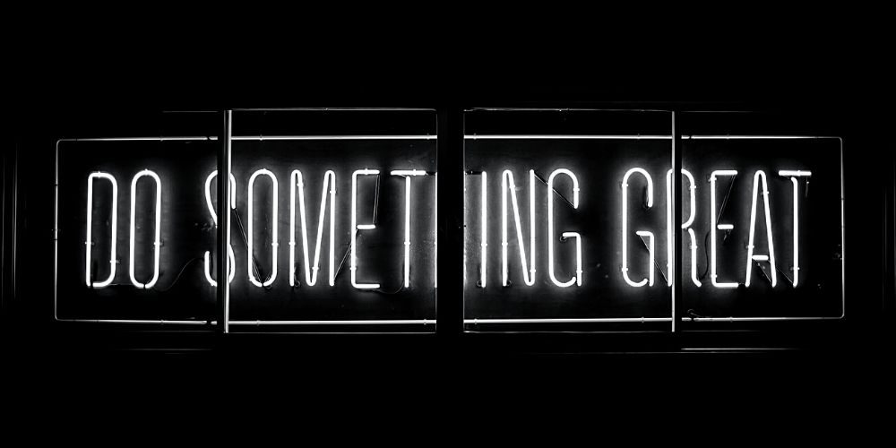

Driven and detail-oriented Software Engineer with over 10+ years of
experience in both hands-on and leadership roles, specializing in
full-stack and product development from initial concept through to final
delivery.
Quick links
Company
Link
Karl Storz US
1012 Consulting LLC
Experience
#1 - Karl Storz US

Company
Location
Time
Karl Storz US
Goleta, CA
2023-Present
Enhanced system reliability and performance through improved monitoring,
automation, and the successful deployment of critical updates for
medical devices while maintaining compliance and cybersecurity
standards.
Developed automation scripts for DevOps tasks, streamlined artifact
management in nightly builds, and implemented CI/CD configurations to
boost productivity and build process reliability.
Contributed to Free and Open Source Software (FOSS) initiatives,
supported FDA audit preparations, managed Grafana for system monitoring,
and utilized tools like Docker, Podman, Git, and virtualization
technologies such as VMware and VirtualBox.
#2 - 1012 Consulting LLC
Company
Location
Time
1012 Consulting LLC
Montecito, CA
2018-Present
Envisioned and co-created IoT / Smart Home consulting business to offer
lifestyle automation technology and services for discerning estate home
clients & companies.
Offer full custom design and specialized integration projects, including
full-stack development, firmware & OS development, product &
hardware design, UI & UX design, custom high-end Smart Home
installations, databases & data science, fleet management and cloud
infrastructure services.
Local installations / services include extensive complex smart-home
installations and additions to multi-million-dollar homes.
#3 - Quantum Integration Inc.

Company
Location
Time
Quantum Integration Inc.
Santa Barbara, CA
2016-2022
Led all aspects of start-up efforts from product conception through
validation, certification, manufacturing, and distribution to 40+
countries worldwide.
Directed all software development efforts, including team management,
sprints, releases & features planning, production deployment, and
testing.
Managed ad campaigns, packaging, video material, brochures, website,
online store, and newsletter.
Held responsibility for client / consumer interface and satisfaction,
including personal interactions, service desk, online shopping
experience, documentation, and hardware / software product experience.
Employed by VTG AG while attending University of Applied Sciences and
tasked with creation and implementation of various automation systems
focused on company-wide optimization, including:
Development of interface tests for business management applications.
Coordination and implementation of a new IoT solution to provide
telematics data, including location & speed of rental wagons, fleet
management and predictive maintenance. (In time, this solution was
implemented over the worldwide fleet of 80,000+ wagons).
Creation of a blockchain concept for optimization of business processes
and logistics.
Design and implementation of a critical IT Security Process to address
complex security threats and meet and exceed the company's cyber
security insurance requirements.
Recognized company-wide by CTO and upper management for achievements.
#5 - Kinexus

Company
Location
Time
Kinexus
Lübeck, Germany
2012-2014
Offered custom web-based solutions and business management applications
to serve small and mid-size business clients.
Acquired and served approximately 5 repeat customers through referrals.
Projects ranged from simple website designs to sophisticated and complex
web-based business management applications.
About
#1 - Skills

Here is a list of fancy buzzwords:
General
Internet of Things
Smart Homes
Blockchain
Startups / Business Management
Software Project Management
Software Architecture
Cloud Computing / Infrastructure
Web Development
UI / UX Design
Product Design
Business Consulting
Marketing
Shopify
Meta & Google Ads
Amazon FBA, ADS, AWS
ITIL Certified
Programming
Javascript
Python
Java
C
C++
Groovy
Front-end
React
Redux
HTML5
CSS
iOS
Android
Liquid
Cypress
Back-end
Node.js
Express
REST API
Websockets
SQL
NoSQL
DevOps
Docker
Jenkins
Linux
Balena
AWS
Git
Productivity
Jira
Confluence
Trello
Notion
Office 365
Design
Adobe XD
Adobe Illustrator
Material Design
Languages
German
English
If you are missing something in particular, I am sure I will be able to
learn it in no time!
#2 - Made in Germany - 1995
Staying true to my origin: My dad taught me how to build my first computer
when I was 6 and got me into website development when I was 13 years old.
I am since then obsessed with everything tech. Not only at work, but also
at home. I don't think this will ever change.
I also bring these (🇩🇪) habits to work:
hardworking
disciplined and efficient
practical approach to problem solving
well-organized
quality over quantity
half 💩 is not an option
If you ever worked with a German you know what I mean.
#3 - B. Sc. Computer Science and Business Management
Computer Science:
Principles of modern IT with a particular specialization in the field of
software development.
Business Information Technology:
Covers modules such as business process modelling, IT organization and
project management in which the focus is on the integration of business
administration and technical contents.
Economics:
Provides an insight into the economic aspects of practical professional
life.
#4 - My values and favorite quotes
Doubt kills more dreams than failure ever will.
Success is not final, failure is not fatal: it is the courage to
continue that counts.
Rules for happiness: something to do, someone to love, something to hope
for.
If you are not paying for a product, you are the product.
Shipping beats perfection.
The greatest project you'll ever work on is you.
Progress is impossible without change, and those who cannot change their
minds cannot change anything.
Success is the ability to go from failure to failure without losing your
enthusiasm.
Build a dream and the dream will build you.
Luck is what happens when preparation meets opportunity.
Design based on The Monospace Web by Oskar Wickström.